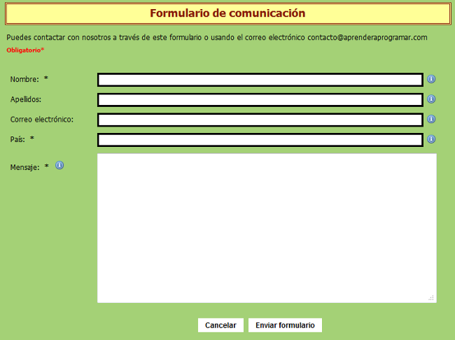

Para comenzar, la diferencia más grande se encuentra en las capas de la arquitectura de software en la que se enfocan:
El desarrollador front end será el encargado de colocar en marcha todo lo relacionado con HTML, CSS o Javascript. Incluyendo también tendencias en esta área, como lo son Backbone, AngularJS, Bootstrap, Foundation y EmberJS. Es su deber el de mantenerse actualizado sobre este tema para ofrecer los mejores resultados posibles.
Mientras que por su parte el desarrollador back end está más enfocado al procesamiento de servidores de aplicación y bases de datos. Para ello emplea Java, Ruby, Python, PHP y .Net, entre otros, y también por la capa de datos Posgres, Oracle, MySQL/MariaDB, y MSSQL. Como se ha podido observar, para el desarrollador back end, la manipulación de datos es un aspecto fundamental.
Y por último, los desarrolladores full stack se encuentran en un punto medio en donde poseen la capacidad de manejar ambos tipos de desarrollo. Todo ello como una especie de generalista, enfocado en el desarrollo de habilidades diversas que sepan adaptarse a todas las capas de un sistema. Un aporte al trabajo de rendimiento porque esta clase de profesionales se encarga de visualizar todo lo que ocurre con el desarrollo web desde una perspectiva general, y con suficientes conocimientos de ambos lados para emitir una opinión de valor.
No obstante, la falta de enfoque en uno de los lados, ya sea el front end o el back end, termina repercutiendo en la capacidad de profundización en una de las especialidades como tal.
Un framework de CSS es una biblioteca de estilos genéricos que puede ser usada para implementar diseños web. Aportan una serie de utilidades que pueden ser aprovechadas frecuentemente en los distintos diseños web.
Bootstrap es un framework CSS desarrollado por Twitter en 2010, para estandarizar las herramientas de la compañía.
Inicialmente, se llamó Twitter Blueprint y, un poco más tarde, en 2011, se transformó en código abierto y su nombre cambió para Bootstrap. Desde entonces fue actualizado varias veces y ya se encuentra en la versión 4.4.
El framework combina CSS y JavaScript para estilizar los elementos de una página HTML. Permite mucho más que, simplemente, cambiar el color de los botones y los enlaces.
Esta es una herramienta que proporciona interactividad en la página, por lo que ofrece una serie de componentes que facilitan la comunicación con el usuario, como menús de navegación, controles de página, barras de progreso y más.
Además de todas las características que ofrece el framework, su principal objetivo es permitir la construcción de sitios web responsive para dispositivos móviles.
Esto significa que las páginas están diseñadas para funcionar en desktop, tablets y smartphones, de una manera muy simple y organizada.
Tailwind CSS es un framework CSS que permite un desarrollo ágil, basado en clases de utilidad que se pueden aplicar con facilidad en el código HTML y unos flujos de desarrollo que permiten optimizar mucho el peso del código CSS.
Tailwind CSS es una potente herramienta para el desarrollo frontend. Está dentro de la clasificación de los frameworks CSS o también llamados frameworks de diseño. Permite a los desarrolladores y diseñadores aplicar estilos a los sitios web de una manera ágil y optimizada.
Tailwind permite escribir los estilos por medio de clases que se incluyen dentro del código HTML y que afectan a un aspecto muy concreto y específico de las CSS, por ejemplo, el fondo de un elemento, el color del texto o simplemente el margen por la parte de arriba. Este enfoque se conoce como "Atomic CSS", por aplicarse mediante estilos muy determinados y simples. En Tailwind CSS a estas clases se les llama "utility classes" o clases de utilidad en español.
Por tanto, Tailwind CSS no aporta muchos componentes. De hecho ofrece muy pocos componentes y son los desarrolladores los que los tienen que realizar bajo demanda del proyecto. En cambio lo que propone es entregar una enorme cantidad de clases de utilidad que combinadas en distintas variantes ofrecen prácticamente un número ilimitado de variantes de diseño, que permite una personalización del aspecto realmente única para cada proyecto.
Además Tailwind es una herramienta que se apoya en PostCSS para todo lo que es la generación del codigo CSS. Gracias a PostCSS se alcanza un flujo de desarrollo muy avanzado, personalizable, agil y sobre todo, extremadamente optimizado. Con ello, el código CSS resultante de un proyecto es realmente ajustado, porque con PostCSS se consige hacer que las clases que finalmente estén en el código de producción sean solamente las que el proyecto está usando realmente, ni una más.
Las principales diferencias entre Bootstrap y TailwindCSS se encuentran en la base de sus componentes y el tamaño de los archivos.
Diferencias en su base de componentes, en este caso, hay que destacar a Bootstrap, puesto que existen un mayor y más amplio conjunto de componentes; entre los que se incluyen tarjetas, modales, acordeones, pestañas de navegación, etc.
Tailwind CSS solo tiene un puñado de componentes de acuerdo con su documentación, siendo la lista completa: Alertas, Botones, Tarjetas, Formas, Rejillas Flexbox y Navegación.
Son tan solo 7 “componentes” frente a los 21 que nos ofrece Bootstrap. En cambio, con Tailwind CSS tendrás el abanico de clases que convinándolas de forma adecuada seremos capaces de crear cualquier tipo de componente que desemos.
Diferencias en su carga y cantidad de ficheros, Bootstrap tiene 4 archivos que se deben incluir en el proyecto para obtener todos los beneficios del Framework CSS por completo. Juntos suman hasta 308.25kb incluyendo jQuery, Popper.js, Bootstrap JS y el archivo CSS de Bootstrap.
En comparación, Tailwind CSS solo requiere un archivo base de .CSS que asciende a solamente 27kb. Es cierto que Bootstrap tiene un conjunto mucho más grande de componentes y funcionalidades, sin embargo, si no necesitamos ciertos componentes como “modales” u acordeones, seguramente Tailwind puede ser una gran opción de cara a implementar un proyecto ligero.
Los documentos denominados Pautas de Accesibilidad al Contenido en la Web (WCAG) explican cómo hacer que el contenido Web sea accesible para personas con discapacidad. El término "contenido" Web normalmente hace referencia a la información contenida en una página Web o en una aplicación Web, incluyendo texto, imágenes, formularios, sonido, etc. (hay otras definiciones concretas en los documentos de WCAG.)
Las WCAG son parte de una serie de pautas de accesibilidad, que incluyen las Pautas de Accesibilidad para Herramientas de Autor (ATAG) y las Pautas de Accesibilidad para Agentes de Usuario (UAAG). El documento "Essential Components of Web Accessibility" explica la relación entre las diferentes pautas.
La importancia de la validación consiste en que nuestra página web además de cumplir con los estándares, es que con ello se vea igual sin importan el navegador o el SO en que se vea y también para que cualquier persona pueda usar esta pagína sin ningún tipo de impedimentos.
Un servidor web es una mezcla entre un equipo hardware y software que se encarga de alojar una página o páginas web y donde a través de software que posee puede tratar los datos que le envíen los usuarios o tratar los que ya dispone el equipo.
El protocolo HTTP es el protocolo por el cual se puede enviar la información a traves de conexiones de red tanto a pequeña escala, local, como a gran escala, Internet, que es enviada a través de archivos como XML, HTML, etc.
Vamos a poner la imagen de un formulario de ejemplo:
Este formulario consta de varios campos que al usuario se le solicitan como Nombre, Apellidos, Correo electrónico, País y Mensaje. Posiblemente los nombres de los campos en el código HTML sean del tipo nombre_user, apellidos_user, email_user, pais_user y msg.
La diferencia entre los métodos get y post radica en la forma de enviar los datos a la página cuando se pulsa el botón “Enviar”. Mientras que el método GET envía los datos usando la URL, el método POST los envía de forma que no podemos verlos (en un segundo plano u "ocultos" al usuario).
Un resultado usando el método GET, a modo de ejemplo, podría ser el siguiente:
www.xxxxxx.com/newuser.php?nombre=Pepe&apellido=Flores&email=h52turam%40uco.es&pais=España
Un ejemplo de uso del método post sería este:
<form action="http://www.xxxxxx.com/prog/newuser" method ="post">
Apache es un servidor de HTTP de código abierto que se puede usar tanto en plataforma Windows, como Macintosh, como en UNIX, siendo uno de los mas usado a nivel mundial.
Y luego XAMPP es un paquete de programas que permite instalar de manera sencilla Apache como un servidor de BBDD, como MySQL, también un gestor como es phpMyAdmin y varios interpretes como el de PHP y todo esto para poder probar tus páginas web en un equipo sin necesidad de conexión a Internet.